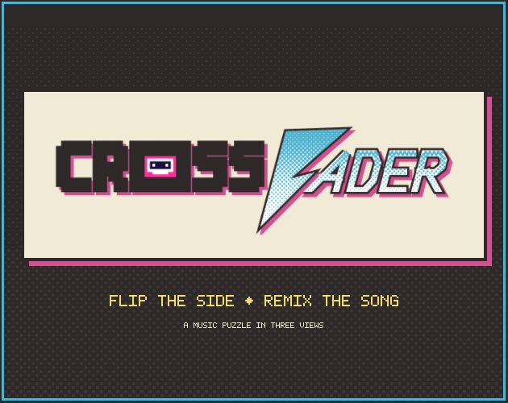
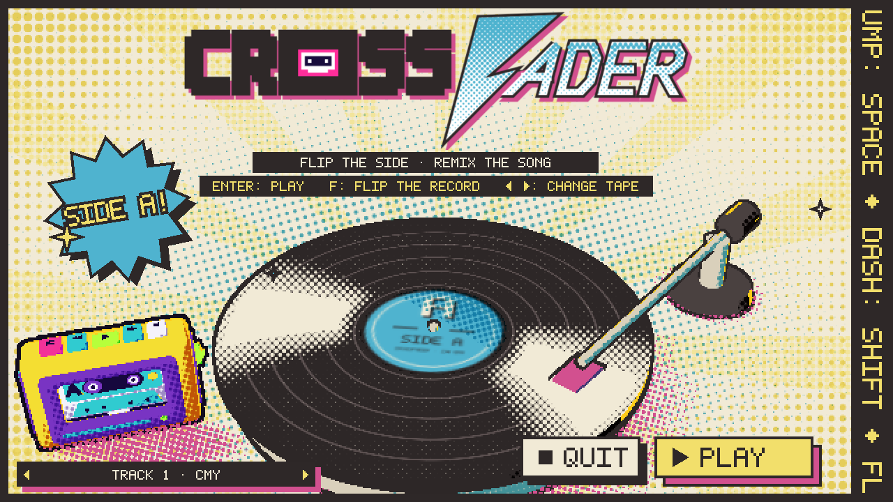
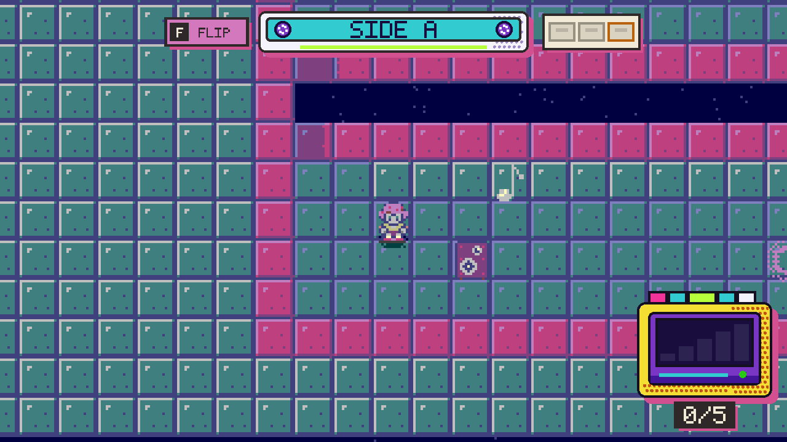
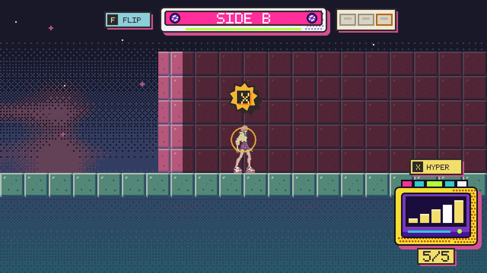
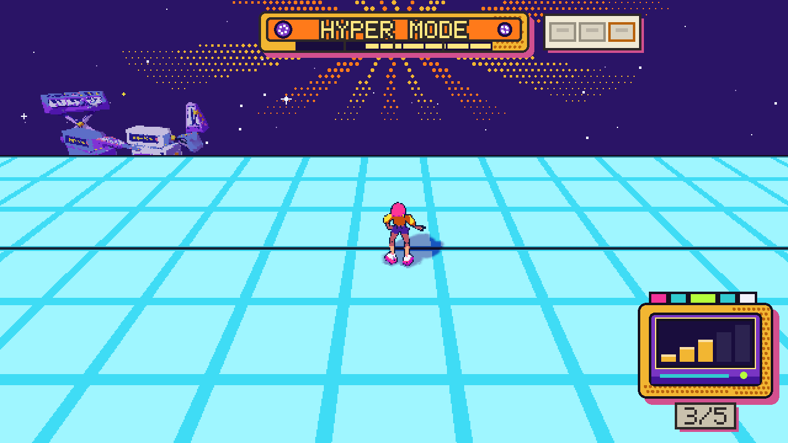
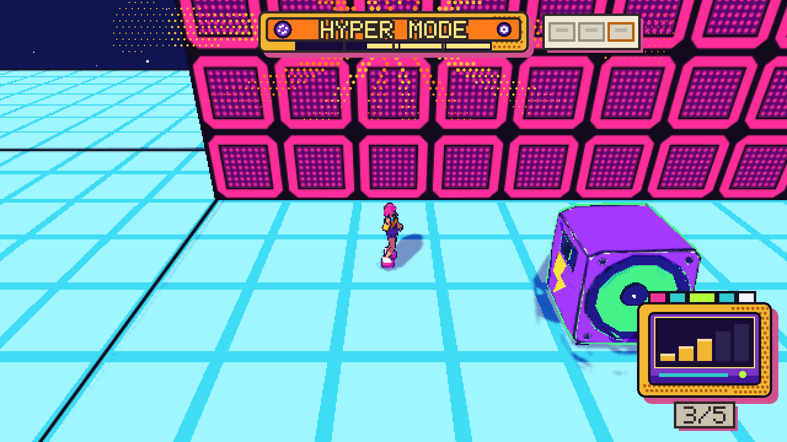

Crossfader
- Made for
- Castle Game Jam, October 2026, 48 hours, theme "cross-over"
- Genre
- Puzzle platformer in three views
- Engine
- Godot 4.7
- My part
- Project coordinator, game designer and UI/UX designer: all the UI, the level design, and an art direction that stays cohesive
- Team
- Malakh17 (programming), Zahkros (2D art), Smoketracy (music and sound design), Elia Scaravelli (3D models, AI engineering), and me
One half-remembered song
Crossfader is a puzzle platformer about Ayane, a girl searching for a song she half-remembers.
The jam theme was "cross-over", and we built the concept around strong clashes of styles and ideals: two different worlds, crossed together. It didn't start as a platformer. The first pivot was a roguelike where dying in one world was how you travelled to the other. We finally landed on a puzzle adventure you move through by platforming.
The idea grew the way jam ideas should: every member brought their own, and my job was finding a direction that could hold some of them elegantly. The cassette wasn't there at the start. It arrived when Elia showed an animation that reminded me a lot of Unbeatable, an indie game I really love, and from then on we built the game around it.

Looking for her own ideas
We are constantly bombarded with cool ideas and concepts, and now with AI even more. A creative person can struggle to find themselves in what they make.
The whole level is a metaphor for Ayane's creative process. She looks for her old ideas inside cassettes to find her inspiration again, and switching between the sides of a cassette is switching between her worlds.
The puzzles get gradually harder as she discovers more of herself, and starts to find her identity as an artist.
Mixtape of influences
The look and feel borrow from a whole shelf:
- Hi-Fi Rush, for a world that moves to the beat.
- HyperPop and MoePop, for the colour and the overload.
- Planarcadia from Honkai: Star Rail, and Splatoon.
- Unbeatable, for some of the concepts.
- Fez, for the level design: one space, read from more than one side.
- Jet Set Radio Future, for the punk.
Side A
Side A shows the room from above. You walk, you find the way, you spot what's hidden. You can't jump here: a missing floor drops you to the level below.

Things you collect only exist on one side. A cassette lying flat can only be read from above.
Side B
Side B shows the same room from the side. Now you can run, jump and dash, and a low wall that blocked you from above is just a hop.

Flipping is one key and always allowed. The puzzle is never in your hands; it's in knowing what each side shows and hides. A cassette standing upright can only be read from the side.
Hyper Mode
Hyper Mode is the decision I'm proudest of. In level design terms it's a cheat: for one track the room opens into 3D and you can go places the two flat sides never allow. What keeps it fair is the story. While she's in it, Ayane can't touch her memories.
Sometimes Ayane gets so inspired by what she's thinking that she falls into Hyper Mode. Pick up five Inspirations and the Walkman gauge fills; press X and the room turns 3D for one short hyper track.
In Hyper Mode she's overstimulated by the rush of ideas in her head, and that makes it impossible to recover her memories, the tapes. To rebuild a memory and learn from it, she has to come back to nostalgia.

So the cheat is balanced by the metaphor: Hyper Mode sets up the solution, it never is the solution. Nothing can be collected in 3D. You use the song to push a subwoofer where it's needed, and the payoff happens back in 2D, where the moved speaker becomes a step, a wall or a bridge.

If it moves on the beat, it matters
There is no tutorial text beyond the first Flip prompt. The room teaches itself through five rules:
- If it moves on the beat, it matters. Pickups and interactive props dance at 120 BPM; scenery never moves.
- Cyan means Side A, magenta means Side B. If you see magenta from above, flip.
- An outline in the signature colour marks what you can touch.
- Sound leads before sight: each cassette leaks its layer of the song as you get close.
- Every action answers on the beat: the flip clicks like a cassette turning, a push lands with a bass thump.
Only two props change the state of a level: the cassettes you collect and the subwoofer you push. Everything else in the room only talks to you.
Three cassettes
Each level hides three cassettes. The first two bring back layers of her song. The third, in a gold shell, ends the track: the room freezes and the outro loops until you're ready to continue.
The jam build has two levels, CMY and Bass Drop.